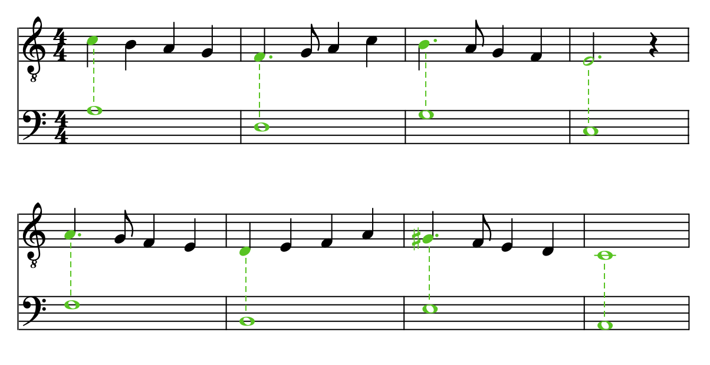
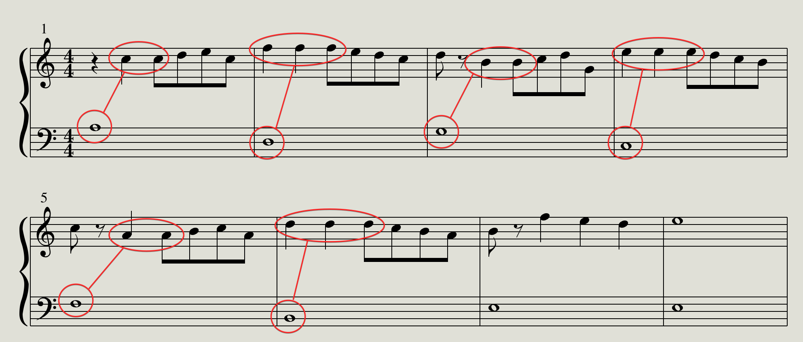

这一讲，我们将介绍在概论中被称为“王牌核心角色”的3rd （三度壳）。
 1. 3rd Shell 的特质
1. 3rd Shell 的特质
3rd 是决定和弦大/小性质（明暗色彩）的关键音，掌控着和弦的音响、色彩与个性特征。因此，当将这个音用作旋律时，会强烈放大和弦的声响色彩。
3rd 的听感极其优秀，即使持续使用也丝毫不会让人感到单调乏味，始终能让人舒适悦耳地听下去。
大家熟知的卡农进行
6-5-4-3-2-1 级进下行的经典进行
4-5-3-6 的王道进行
旋律始终围绕着 3rd Shell 来构建。无论哪一条，听起来是不是都有一种似曾相识的感觉？正因如此，以 3rd Shell 为核心的旋律线条堪称经典、无可挑剔的铁律模式。为了以防万一，我们也来对照听听换成 Root Shell 时的效果。
大家熟知的卡农进行 + Root Shell
果然显得过于直白、质朴，在这种情境下会让人感觉相当孩子气。如果是童谣倒还合适，但若是流行歌的旋律，恐怕会被认为很土气。两相对比之下，便能体会到 3rd 所蕴含的丰富情感厚度及其与流行音乐的高度契合性。
2. 3rd Shell 与古典 / 爵士
3rd Shell 展现明暗色彩的能力，在古典音乐中扮演着极其关键的角色，在爵士乐中亦是如此。这两大奠定了现代音乐理论体系的音乐流派，都对 3rd 音视若珍宝。
古典乐中的表现
这是巴赫的《G弦上的咏叹调》（Air on the G String）。关注其开篇优美的旋律，你会发现许多关键重拍位置都选择了 3rd Shell。

每个小节的开头始终是 3rd！这绝非偶然，巴赫必然是精心设计了这条旋律与和弦，使其交织碰撞出极其醇厚的和声织体。
爵士乐中的表现
在爵士乐中，我们也能频繁见到以 3rd Shell 为主轴的 Standard（标准曲）旋律。
《Fly Me to the Moon》是最著名的爵士标准曲之一，而其主题旋律的前 8 小节，居然完全是由 3rd Shell 构成的！


宛如穿针引线一般，旋律接连不断地追随着 3rd 音。表面上看似乎是在强调水平方向的动机重复，但与此同时在垂直方向上也保持了高度统一的构造——宛如在欣赏一件精致华美的刺绣艺术品。
这样的例子只是冰山一角。在这些流派中，以 3rd 为核心构建旋律，可以说已经成为了某种旋律创作的基础范式，占据着不可动摇的地位。而在现代流行音乐中，其重要性也毫无二致。
3. 3rd Shell 与流行音乐
接下来，我们来看看现代流行音乐中的实际案例。
桃色幸运草Z –《再见，可爱的悲伤啊》（サラバ、愛しき悲しみたちよ）
副歌的旋律几乎全程围绕着 3rd 展开。

桃色幸运草Z《再见，可爱的悲伤啊》（作曲：布袋寅泰）上方的乐谱提取了副歌部分的旋律与低音线条，红圈相连的配对即为 3 度音程关系。当统一性达到如此严密的程度时，听起来仿佛已经是古典主义时期的音乐作品。
值得一提的是，这首歌在副歌结尾唱到“始まったばかりだ”（才刚刚开始）的地方，采用了四拔音阶（五声音阶）并呈现出相当浓厚的水平走向线条，这种鲜明的对比给人留下了极为深刻的印象。这首歌充分说明了同时驾驭“垂直”与“水平”是旋律创作的核心钥匙。
Coldplay – Magic
注意前奏部分。吉他演奏着简单质朴的单音短句，但实际上与贝斯保持着严丝合缝的 3 度关系。
如果交替穿插各种不同的 Shell，声响上固然会更具变化，但正因为刻意不这么做，反而烘托出了一种宁静沉敛的氛围。Shell 虽然始终单一停留在 3rd 上，但由于 3rd 本身掌控着大/小调性的多彩特质，即便如此听起来也毫不厌倦。
Nujabes – Luv Sic Pt5
虽然这是一首说唱（Hip-Hop/Rap），但伴奏音轨（Beat）却一直贯穿着 3rd Shell。和弦按 6-5-4-3-2-4-5 逐步推进，带有较阴郁灰暗的色彩，旋律则紧密贴合着和弦的流转，始终保持在 3rd 上。这首歌以“挚爱之人的离世”为主题，与 3rd Shell 那份深沉饱满的情感力量不谋而合。
《启程之日》（旅立ちの日に，合唱曲）
这是日本家喻户晓的毕业典礼经典合唱曲。间奏（1:48~）中进行了大约 15 个和弦，然而令人惊叹的是，其中多达 13 个和弦的拍头旋律都是 3rd。那种情不自禁引人落泪的丰富情感，正是由 3rd Shell 赋予的。此外，这首歌在副歌部分同样以极高的比例使用了 3rd Shell。在创作感人至深的抒情曲（Ballad）时，3rd 的存在不可或缺。
4. 3rd Shell 与 EDM
在当今的电子舞曲（EDM）中，也有很多作品充分利用 3rd 醇厚动听的共鸣，让主音 Lead 与低音 Bass 持续以 3 度差平行行进。
Zedd – I Want You To Know
完整版可在此处收听。在 0:08~ 开始的主段中，合成器 Lead 与 Bass 几乎全部以 3 度平行移动，牢牢维系着 3rd Shell。
Skrillex and Diplo – Where Are Ü Now
1:09 处 Drop 开始，随后是一段单纯由低音线条独立支撑的段落。接着在 1:37 处转为倍速四四拍（Double-time 4-on-the-floor）时，主 Lead 贝斯与次低音 Sub-bass 开始分头行动，此时大部分音符都以 3rd Shell 运动。正是因为前面经过了质朴单调的 Root Shell 铺垫，这里 3rd 的色彩才显得尤为鲜活生动。
Ariana Grande – One Last Time
这是一个相当极致的范例。在前奏中反复出现的主乐句中，除了部分旋律快速跑动的音符外，贝斯与主旋律几乎始终维持着 3 度的关系。发展到这种程度，与其说是旋律，不如说更接近于给贝斯线条叠加了一层和音。
特别是在 EDM 中，通常不会给负责铺垫和弦的乐器分配太多音量，而是只把 Bass 与 Lead 两个核心声部调大以彰显震撼力量。当人们思考“如何仅凭 2 个音就能构筑出丰满听感的和声”时，能够明确提示和弦大/小明暗性质的 3rd 自然就成了 Lead 音符的首选，这可以说是一种必然的结果。
5. 3rd Shell 与电影配乐
话说回来，刚才第二条从 VIm 级进下行的示例，你是否隐约觉得很有吉卜力（Ghibli）电影配乐的韵味？
6-5-4-3-2-1 级进下行的经典进行
事实上，久石让的音乐也毫不例外地将 3rd Shell 作为王牌王炸来大显身手。
这便是完全凭借 3rd Shell 力量一贯到底的典型代表。在“あの地平線輝くのはどこかに君を……”（地平线之所以闪耀，是因为有你在某方）的整段乐句流转中，每次和弦更迭切换的瞬间，旋律必定毫无例外地落在 3rd 上。这份催人泪下的强烈哀愁与宿命感，正是 3rd 的力量所在。
在吉卜力系列配乐中，这种将 3rd 与暗色调和弦进行相结合的写法堪称标志性招牌，在《来自虞美人之坡》的《别了夏天》（さよならの夏）、《魔女宅急便》的《看得见海的街道》（海の見える街），以及《千与千寻》的《走向那个夏天》（あの夏へ）中，都可以见到极为相似的构建手法。
很多人听完都会觉得这些旋律与《伴随着你》（君をのせて）有着异曲同工之妙。这不仅是因为和弦进行十分相近，更深层的原因还在于它们甚至连外壳音（Shell）的配置结构也如出一辙。 此外，2018 年电影《羊与钢的森林》的主旋律也是基于完全相同的和弦进行与 Shell 配置写就的，几乎已经将其作为一种品牌标志性的声音印记在使用。无论如何，这都是绝对王牌级的存在——这正是 3rd Shell 的魅力与威力。
除了吉卜力电影，在其他感人至深的配乐 BGM 中，我们也能屡屡发现 3rd Shell 的妙用。
电影《永远的三丁目的夕日》（ALWAYS 三丁目の夕日）的主题曲中，度过了开篇宁静安详的段落、进入 VIm 之后（0:44~），绝大多数和弦更迭处的切入音都被赋予了 3rd Shell。
坂本龙一的《Aqua》虽然最初并非为电影所作，但作为是枝裕和执导的电影《怪物》的配乐而广为人知。 这首曲子首先从 0:10~ 开始，针对 VIm — IIIm/V — IV 进行，旋律以连续的 3rd 音切入，这一句型成为了全曲反复出现的核心动机。不仅如此，在 1:00~ 处，低音沿 La-Ti-Do 级进上行，旋律则以 Do-Re-Mi 叠置而上，以与此前相反的顺次上行形式运用了 3rd。深情饱满的 3rd Shell 与上行/下行的呼应对比，使得这首简洁的钢琴独奏曲展现出了格外丰富细腻的情感张力。
电影《天堂电影院》（Nuovo Cinema Paradiso）中的《爱的主题》（Love Theme）中，开头针对 6-2-5-1 的和弦进行，3rd Shell 连续绵延其上（0:12~）。当你想要谱写一首震撼心灵、动人肺腑的主题曲时，3rd Shell 是极其强大的选择。
3rd Shell 的弱点
如上所述，3rd Shell 可以随心所欲地使用，并且能不断赋予乐思丰富的神韵，几乎挑不出任何致命短板。但若一定要吹毛求疵，那大概就是存在情绪过于浓郁泛滥的风险。对于爽朗欢快或活力四射的曲风，Root 或 5th 可能会比 3rd 更为贴切出彩。 此外，当你希望音乐在 I 或 VIm 和弦上彻底落定、打造完全终结的宏大闭合感（收束感）时，Root 显然是更为胜任的主角。在刚才提到的《永远的三丁目的夕日》主题曲中，乐曲在最后的最后正是用沉稳坚定的 Root 稳稳收束。
不同外壳音之间绝无高下优劣之分，所体现的仅仅是其所能营造的艺术表现方向的差异。在牢记这一原则的同时，非常推荐大家积极尝试并充分运用 3rd Shell 的非凡表现力。
总结
- 决定和弦大/小明暗性质的 3rd，能够强化和弦原有的色彩，具有显著增强旋律情感浓度的功能。
- 与 Root Shell 不同，3rd Shell 无论如何连续反复使用都不会令人感到乏味，是一种极度亲和且易用的外壳音。
- 然而它相对缺乏直白笃定之感，在某些特定曲风中，过度使用可能会带来情绪过剩的副作用。